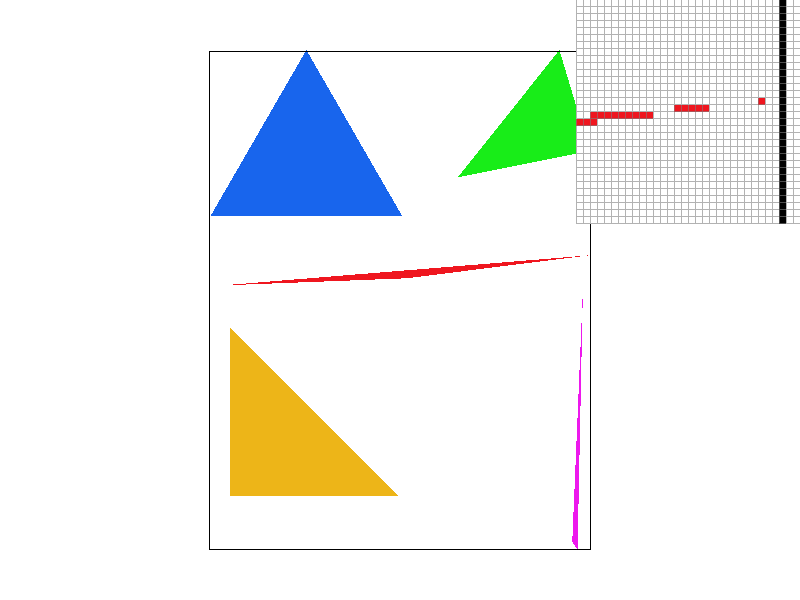
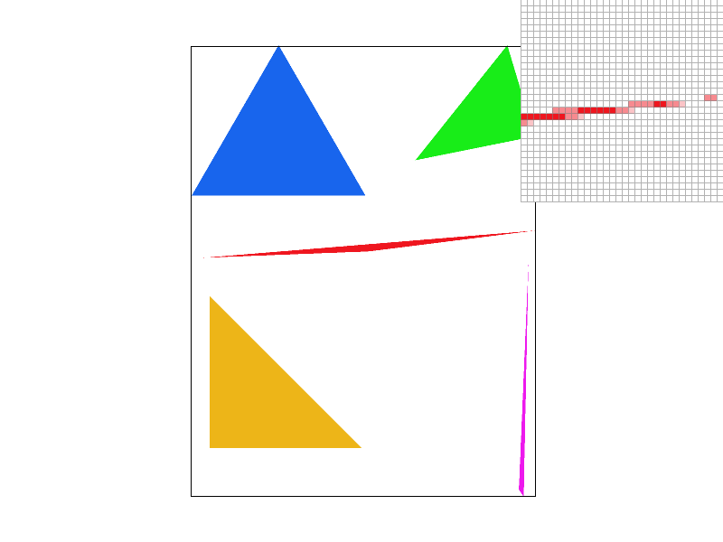
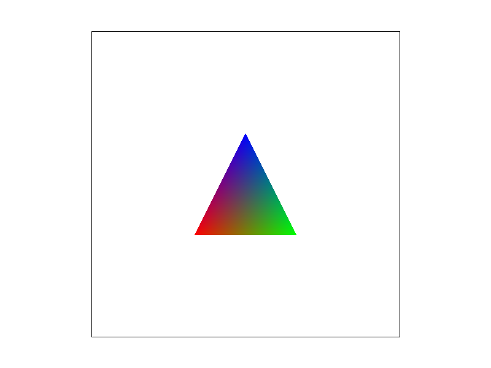
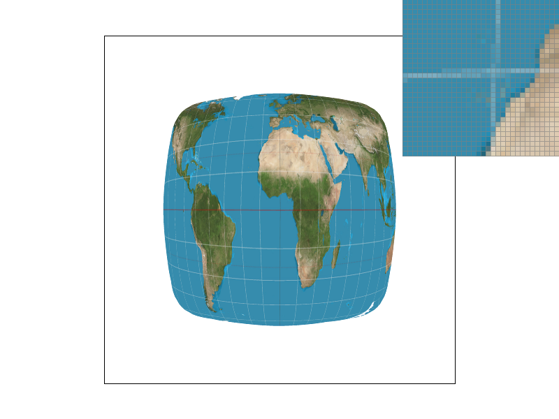
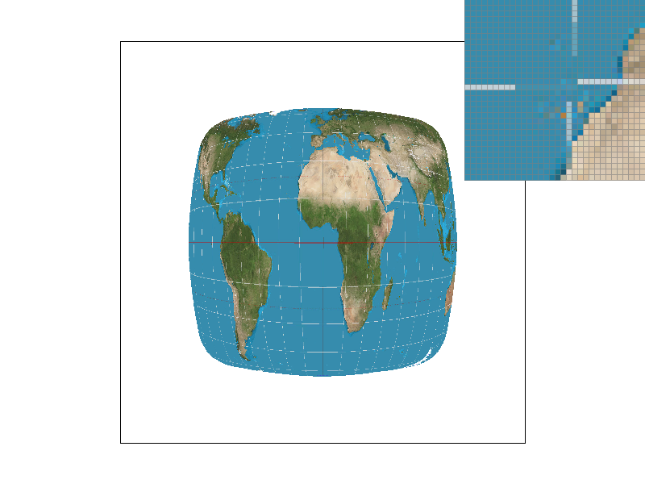
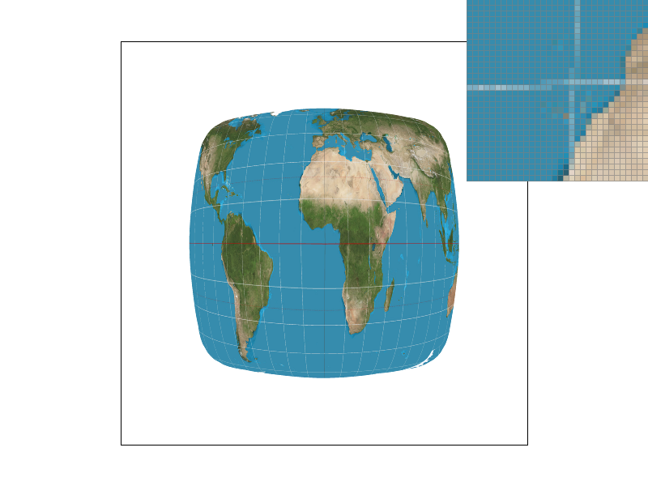
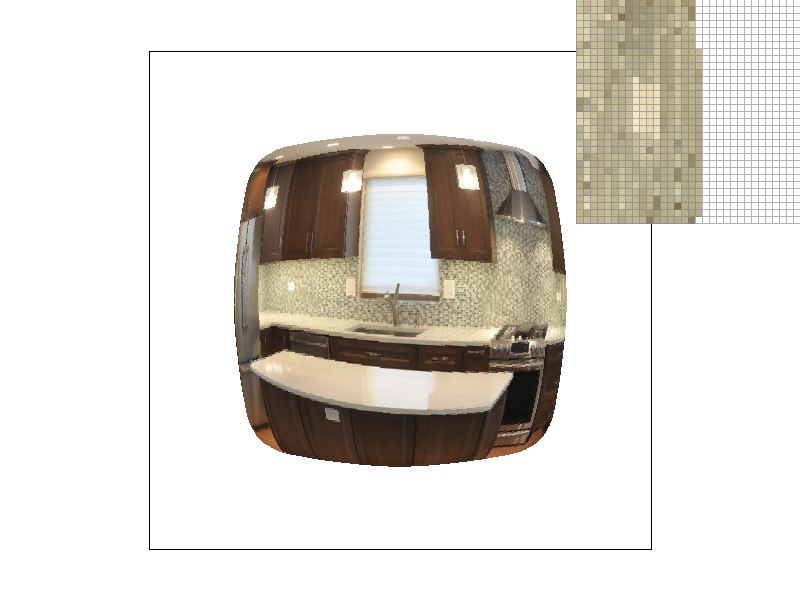
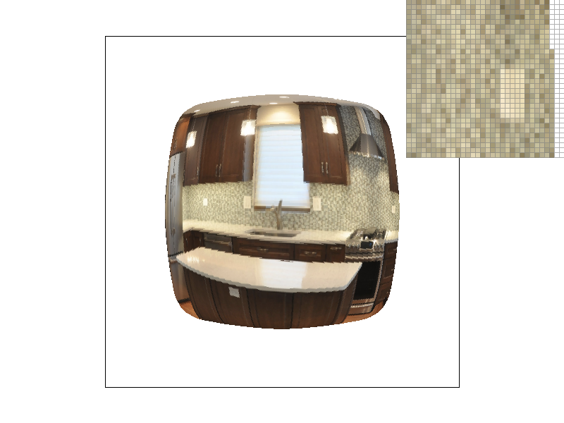
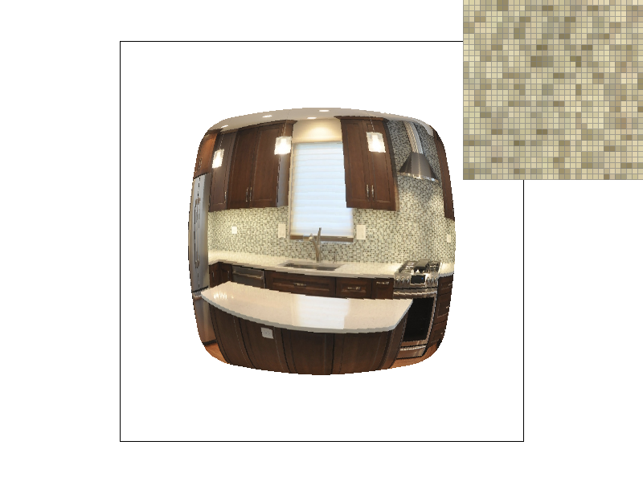

Overview
For the rasterizer, we implemented basic triangle rasterization, rasterization for textured triangles, transforms, antialiasing methods like level sampling and pixel sampling, as well barycentric coordinates. As part of the project, the rasterizer was able to parse SVG files and render them to the screen using the techniques mentioned earlier. I learned a lot about graphics algorithms and was surprised about how much of a difference different algorithms. I was mostly surprised about bilinear interpolation and how powerful it proved for antialiasing. In general, I also brushed up on my C++ skills.
Section I: Rasterization
Part 1: Rasterizing single-color triangles

Triangle rasterization attempts to represent a triangle that exists within geometric space within pixel space. Pixel space is discrete, therefore representations of triangles in pixel space require sampling from the triangle in geometric space. This can be done by determining pixel coordinates with respect to the triangle, i.e either inside or outside the triangle. Points outside of the triangle are filled in, while points inside the triangle are filled in according to the triangle color. In my implementation of triangle rasterization, I determine the position of pixels with respect to the triangle by computing the normals to the vectors representing the triangle sides. I then compute whether a point lies inside the triangle, by performing a 3 line test and checking that the dot product of the normals with the point vector are positive. If a point lies inside the triangle, I set the color of the pixel in the framebuffer to be the triangle color. My method of rasterization was exactly as efficient as checking all points within the bounding box of the triangle since I determined the bounding box of the triangle by finding minimum and maximum x and y values, then iterated over all points between those, performing a 3 line test for each pixel.
The main issue I faced initially was not determining the vector representing the inner point correctly. Instead I was using the original x and y coordinates. Additionally, I also faced issues with handedness after rasterizing. I initially accounted for having selected the opposite (negative) normal by adjusting the vector of the third point, so that it had a positive dot product with the vector of the other two points. Despite handling this, I found that only triangles rendered counter clockwise were rasterized. After debugging, I found it was the result of not being able to modify the Vector2D struct, therefore the normals were not being updated.
Part 2: Antialiasing triangles
My supersampling pipeline added an additional layer by having an intermediate sample buffer. During triangle rasterization, I sampled by sampling rate points for each pixel within a pixels bounding box. I did this by sampling in increments of 1 / (1 + sqrt(sampling_rate))
as part of an additional two inner loops. The sample buffer was the provided vector of Color objects, on triangle rasterization I populated the sample buffer with super samples taken from within a pixel, using the same logic as regular rasterization using the 3 line test, where index (y * width + x) * sample_rate + sample_number, is the position to fill the color in for. Once the sample buffer was fully populated after all triangle rasterization was completed, I downsampled from the sample buffer into the frame buffer by averaging each rgb value within a pixel to determine the pixels final color value. The sample buffer needed to be dynamically resized based on the sample rate, so I also updated the resize method to resize the sample buffer to of size width * height * sample_rate.Supersampling is useful as it filters out high frequency signals or edges in the case of images. Rather than having a drastic change in color at a triangle edge, instead it's a smoother gradient, as the pixels along the edge are an average of super samples rather than a single sample. This filtering of high frequencies is the anti-aliasing behavior of supersampling. The images are blurrier when super sampled, but there are no more jaggies and once broken edges have a smooth gradient across them.
|

|

|
|
|
|
This smooth gradient introduced by supersampling can be seen as the sampling rate increases. Originally, there is a break between pixels, but this gradually closes with the increase in sampling. This occurs, as at a sampling rate of 1, the center of of the pixel may be missed if a triangle is skinny, but a later center may be inside of the triangle. Increasing the sampling rate introduces additional points that will lie inside the triangle and samples outside of the triangle. These samples will still influence the final pixel value, as they're averaged.
Part 3: Transforms
In this drawing, I used a set of two rotations to create a waving cubeman. Originally, I wanted to create a dabbing cubeman, but the initial length of his arms and size of head excluded that possibility. I experimented with applying two rotations of 45 degrees, one to his entire arm, then one to his forearm, but did not get the expected result. His forearm was too stiff and the alignment of his arm and forearm were incorrect. To adjust for this I also modified the translation values, so that his elbow and shoulder were both connected properly.
Section II: Sampling
Part 4: Barycentric coordinates

|

|
Barycentric coordinates are a way to represent points in space relative to at least 3 non-collinear points as opposed to representing them using axis positions. The position of the point is represented by a weighted average of other points, such that the sum of the weights is exactly 1. In the case of 3 points and non-negative weights, this means the barycentric coordinates lie within the triangle. For interpolation with barycentric coordinates, the smaller the relative distance between a point in the triangle and a vertex, the higher the weight of that vertex. These weights can be applied to colors as seen in the color interpolation image. Points closest to the triangle corners have color values closer to that vertex, while points in the center are the average of colors.
Part 5: "Pixel sampling" for texture mapping
Pixel sampling is for determining a pixel's value within a triangle based off of it's position within a texture. To determine the pixel's position in vector / texture space, we can use barycentric coordinates to interpolate from it's position within screen space. For my implementation of barycentric coordinates, I took the norm of the cross product of the opposite vectors to find the area of the triangle opposite to a vertex. The normalized area corresponded to that vertex's weight. Once the pixel's position in texture space is known, we can sample from texture space using nearest or bilinear sampling. In nearest sampling, the pixel color is derived from the color of the nearest pixel center in texture space. In bilinear sampling, it's the weighted average of the 4 nearest centers, where the weights are found by proximity to the point in texture space.
|
|

|
|

|

|
There is a large difference in nearest and bilinear sampling for the earth map. Along the longitudes of the map, there are noticable gaps within the line in nearest sampling. This occurs, since the area within texture space of the line is very small, so for pixels that are near but outside these pixel's, the color will be that of the larger area surroundings. However, for bilinear interpolation, the relative closeness of that pixel in texture space means that it will still have high weight towards the color. In general the largest difference will be noticed for high frequency changes in texture space.
Part 6: "Level sampling" with mipmaps for texture mapping
In level sampling, the pixel values are instead sampled from a mip map of possible texture. An increase in level means that points are sampled from a texture of a quarter of the size. This allows for better rendering of parts of an image further away from the view, as otherwise the frequency of change would be too high along the texture. To determine which level of mipmap is used, the change in texture space with respect to pixel space can be taken. A larger change in texture space relative to pixel space means that it's further away. This derivative can be calculated impirically by interpolating the position in texture space of a point at x+1,y then at x,y+1. The level corresponds to the log base 2 of the maximum change in texture space.
Between pixel sampling, level sampling, and supersampling, pixel sampling is the most memory efficient. Level sampling requires the introduction of the mipmap which increases overall space usage by 1/3. This is still less than the potential memory usage of super sampling which increases the sample buffer and memory use by square root of the sampling rate. Pixel sampling is faster, as it requires little compute for nearest sampling (a rounding operation) and bilinear sampling (linear interpolation). Supersampling requires many more expensive computations point inside triangle tests, so roughly square root the sampling rate times the amount of work. The mipmap computation is a superset of the nearest sampling computation as it involves computing the derivative and then interpolating between levels or nearest sampling between levels. Overall the order of speed is pixel sampling, level sampling, and supersampling. Antialiasing power is highest for supersampling, as taken to an infinite sampling rate it can perfectly blur an image. The antialiasing power of the mipmap is noticable for images where there are textures further from the screen and can provide per level filtering. The pixel sampling is generally more powerful for antialiasing, as it covers the entire image. When observing images, the best improvement was from pixel sampling.
|
|

|
|

|

|
In my initial code, I ran into errors for not properly scaling positions within texture space. I had a vector with values always below 1, so the level sampling did not change anything, as levels were always incredibly negative since vector distance was small. I also had not clamped the level, so I ran into segfaults from this.
Section III: Art Competition
If you are not participating in the optional art competition, don't worry about this section!